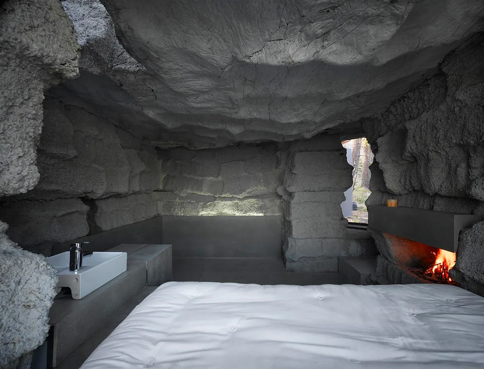
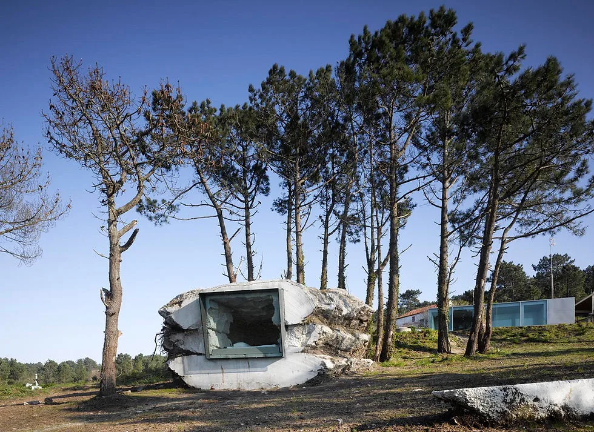
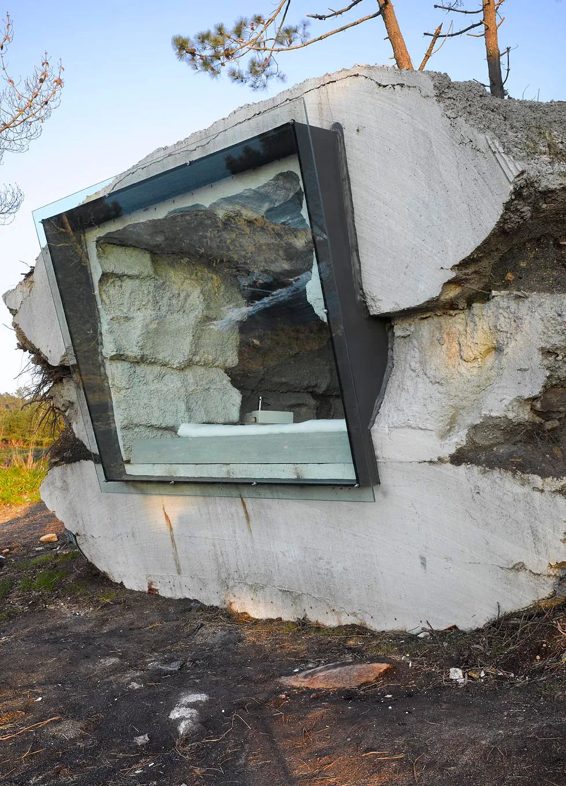
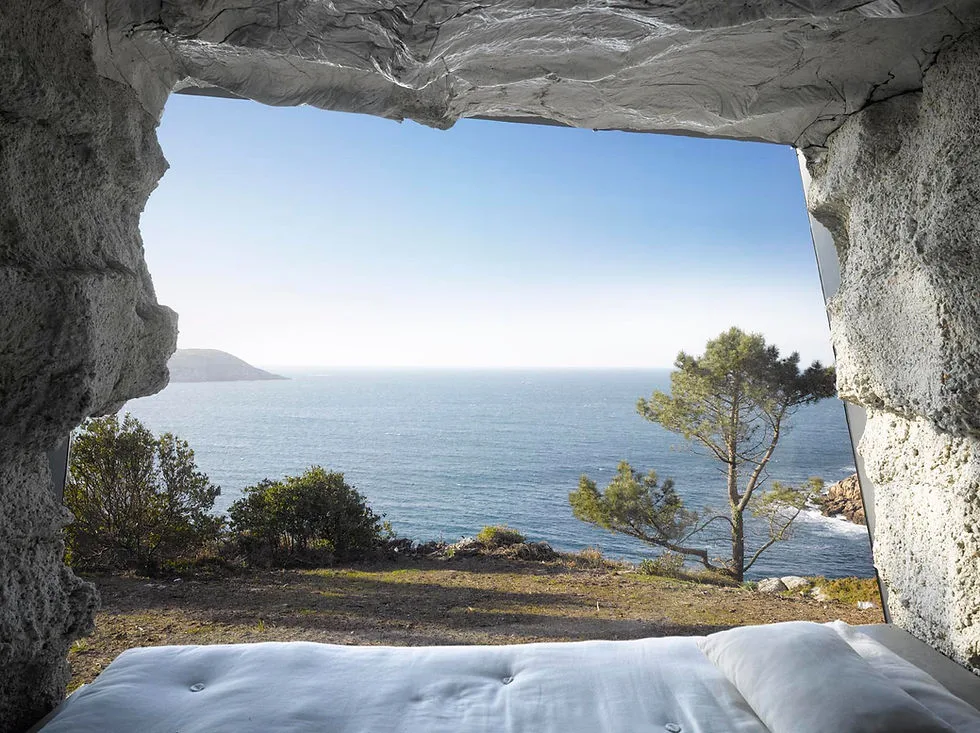
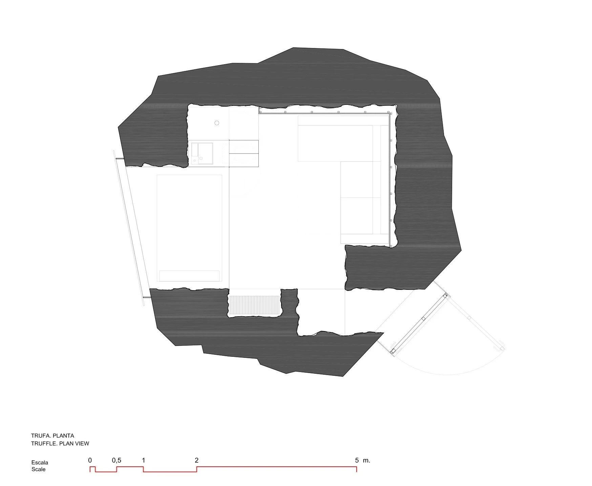
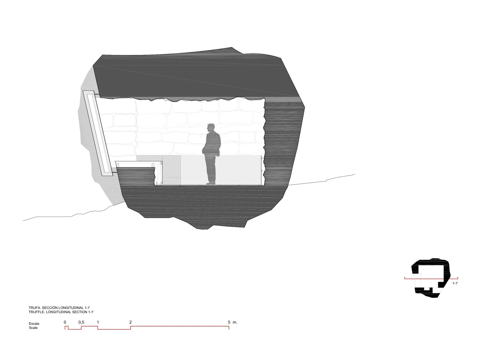

← Precedent index / 11 of 52
Small retreat · 2010
The Truffle Ensamble Studio
A small retreat on the Costa da Morte, with a compact interior and a strong sense of enclosure.
Concrete was poured around a volume of hay bales held within an earth mould. Removing the earth and the hay revealed the enclosing mass and its interior void, allowing the construction process to determine the room’s form and surface.
Project account — Ensamble Studio ↗

Fig. 01 InteriorEnsamble Studio project gallery; supplemental drawings published by ArchDaily, courtesy of Ensamble Studio. Online source Relevant connections THINK The enclosed retreat offers a setting for introspection and reflection.
Images and drawings / 06

Fig. 02 LandscapeEnsamble Studio project gallery; supplemental drawings published by ArchDaily, courtesy of Ensamble Studio. Online source 
Fig. 03 EntranceEnsamble Studio project gallery; supplemental drawings published by ArchDaily, courtesy of Ensamble Studio. Online source 
Fig. 04 Sea viewEnsamble Studio project gallery; supplemental drawings published by ArchDaily, courtesy of Ensamble Studio. Online source 
Fig. 05 Plan - floorEnsamble Studio project gallery; supplemental drawings published by ArchDaily, courtesy of Ensamble Studio. Online source 
Fig. 06 Section - longitudinalEnsamble Studio project gallery; supplemental drawings published by ArchDaily, courtesy of Ensamble Studio. Online source ← All 52 precedents Online sources for this project Next: Second Home Hollywood Office →